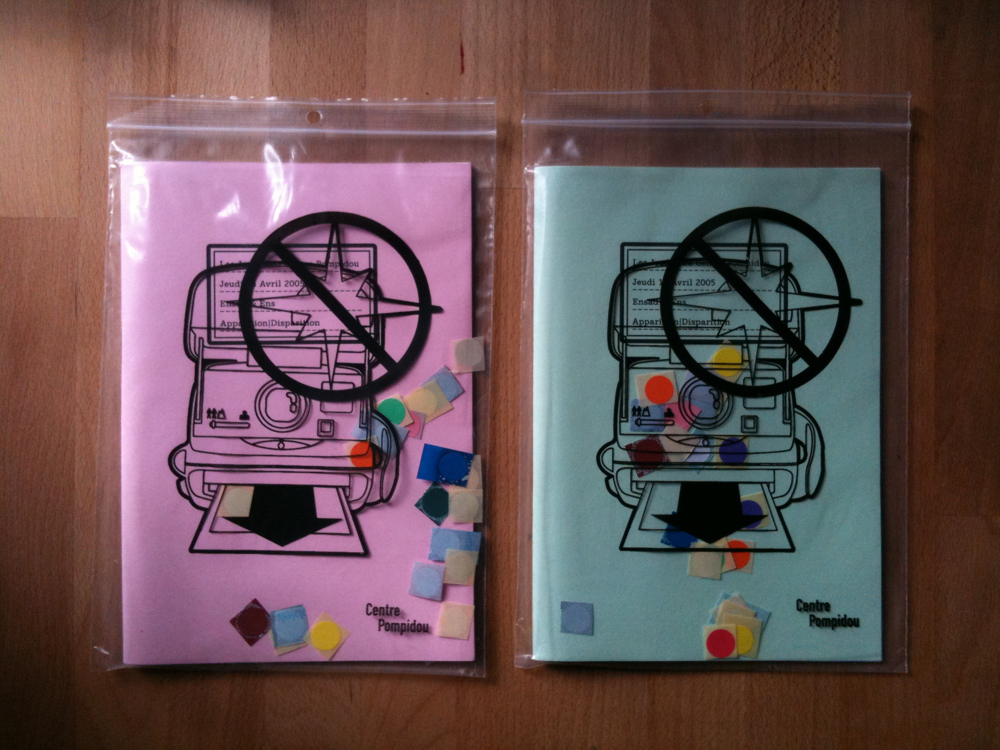
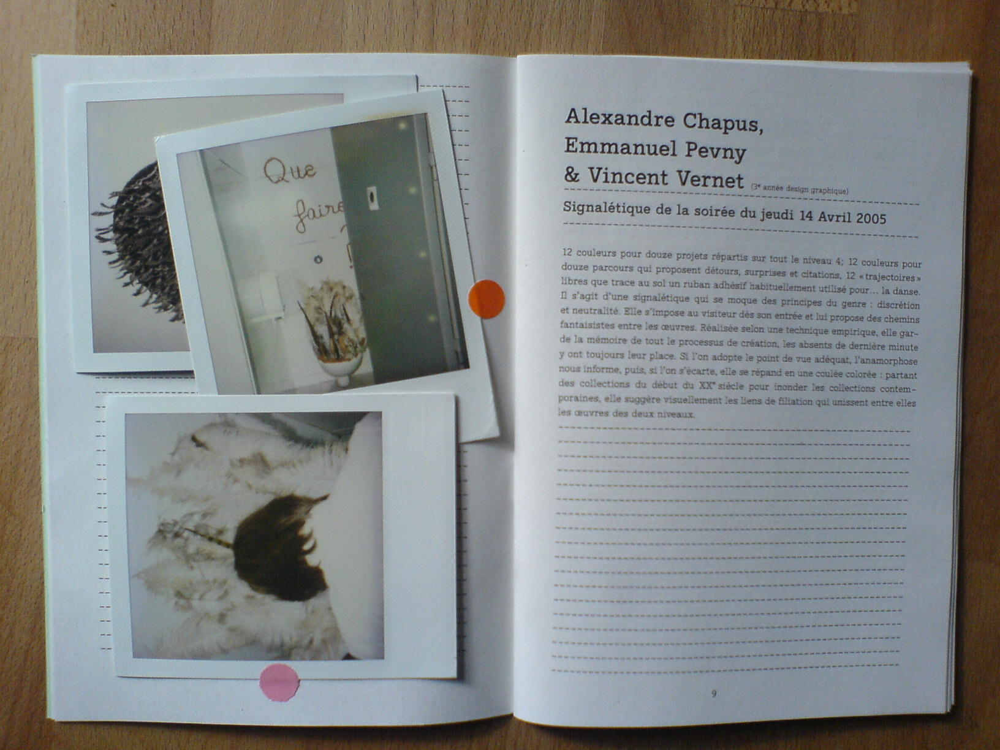
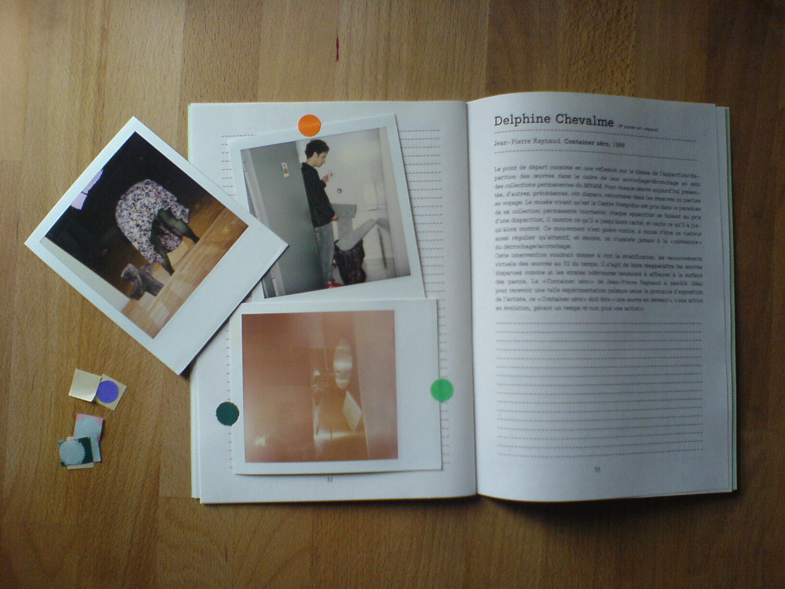

“Les Jeudi’s”, exhibition at the Centre Pompidou, Paris 2005
|
What was this exhibit? Graduate students from ENSAD, the French art school, got to interpret the permanent collection of the Centre Pompidou by juxtaposing their work next to the art in the museum. The goal of the exhibit was to provide new perspectives on the museum's collection. I was tasked to craft the exhibit catalogue (with art works that wouldn't be finished until the day of the opening) 
So how do you make an exhibition catalogue with artwork that hasn't yet
been produced?  
|